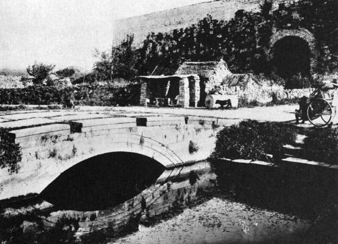
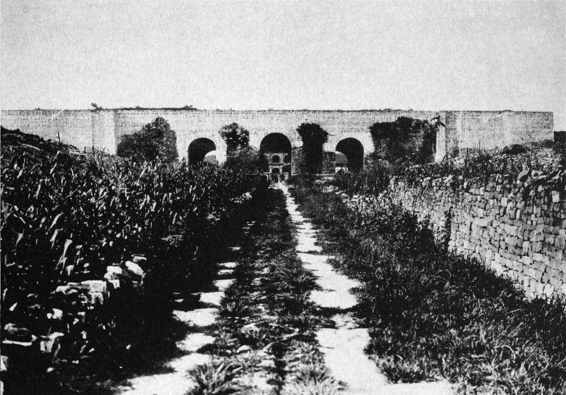
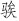
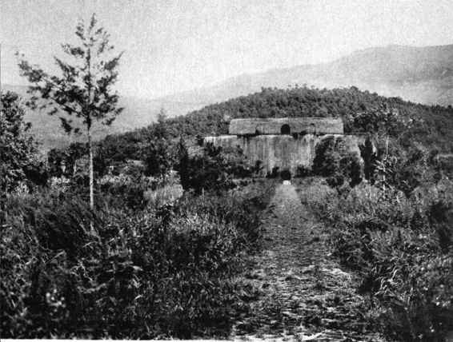
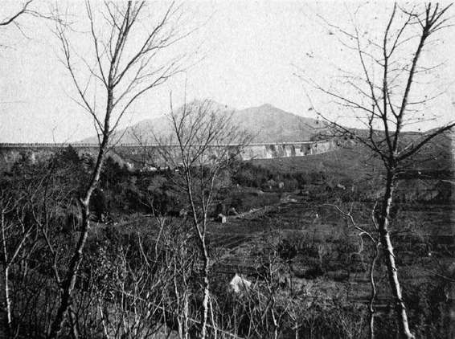

我们能够落实的他的劣迹，主要就是享乐主义的生活内容和生存态度。在马士英、阮大铖辈看来，一位以饮酒、看戏为极大满足的皇帝，实在也是再省心不过了。阮大铖的高水平私人剧团，令朱由崧的南京生涯差不多就是一次跨年度的漫长戏剧节。某种意义上，对戏剧不可思议的痴迷“拯救”了朱由崧，他把整个身心扑在这一件事上，没完没了看戏，甚至从南京逃走前一个时辰也在看戏。这种过于集中的乐趣，使他少有别的乖张之举。既没像晋灵公那样，以弹弓袭击人民取乐；也不像隋炀帝那样，曾为自己挑选、储备十多万美女，以供临幸；更不像后梁太祖朱温或其祖宗明成祖朱棣那样，以杀人为消遣……总之，表现算是相当安静，史著里甚至没有提到他曾外出过紫禁城。他所履行的公务，仅限当朝堂需要时出面见见大臣，装装样子，讲些无关痛痒的话，此外便“躲进小楼成一统”，喝自己的酒、看自己的戏。在我印象中，闹得不像话的有两件事。一是将太后迎到南京时，为安顿太后选宫女；一是为自己筹备大婚，跟户部要钱、派太监征民女。这两件事，在他已是动静最大的了，但放到历史上看，跟许许多多前辈皇帝比，也很平常。

南京故宫午门五龙桥
民国老照片。午门又称五凤楼，楼前御沟上对应有五龙桥。图中，“雕栏玉砌”均不在，沟水秽浊不堪。

南京故宫午门
民国老照片。南京故宫午门仅剩墙体，楼阁荡然，宫外成为荒地，种着庄稼。
不过，上面的叙述绝非就他“为人”暗示什么。他的安静，恐怕不是个人性格的表现。还是那句话：终而颓焉。从万历、泰昌、天启诸帝的不安静，到弘光皇帝的比较安静，正确的理解是势之使然。前面各位早已折腾个天翻地覆，朱由崧既无折腾的本钱，也没有多少可折腾的了。
说到“为人”，虽然观察的机会很少，但还是有一件事可供我们略窥朱由崧的“为人”。那就是“翻案”这件事。
我们知道，明末政坛浊乱都因“三案”而生，而朱由崧父亲老福王，正是“三案”的起因。崇祯即位，将阉党定为逆案，为“三案”画上句号。然而当初曾在逆案中落水的好些人，如阮大铖、杨维垣等，人还在、心不死。现在朱由崧既为“今上”，他们认为是翻案的绝对时机，紧锣密鼓撺掇此事。先是请求寻访已被崇祯下令销毁的阉党所修《三朝要典》并予重议，继而为逆案中若干人等请恤请复，最后策划重兴大狱、追论东林诸臣之罪，把他们“并行究治”。在这股势力及舆论面前，朱由崧的态度非常关键。从某种意义上说，阮大铖等的主张十分切合朱由崧的个人利益，当初若非东林党人阻挠，父亲朱常洵肯定将是万历皇位继承者，而假使如此，朱常洵便不会就藩洛阳而落个惨死下场，进而，朱由崧本人亦不至缒城逃亡、沦落民间、形如乞丐。万一他是个睚眦必报的人，与谋求翻案者们一拍即合，不妨说倒很顺理成章。但整个过程中，朱由崧的表现却意外地“有利有节”。他批准寻访《三朝要典》，命“宣付与史馆”，这相当于解除了崇祯对该书的禁令。当反对一方表示异议，他坚持自己的决定，并循循说出理由。如：
总督袁继咸言：“《要典》不必重陈。”有旨：“皇祖妣（郑贵妃）、皇考（朱常洵）之无妄之诬，岂可不雪！事关青史，非存宿憾，群臣当体朕意。”[22]
左良玉亦上疏谏止，认为：“《要典》治乱所关，勿听邪言，至兴大狱。”朱由崧答道：
此朕家事。列圣父子兄弟之间，数十年无纤毫间言，当日诸臣，妄兴诬构，卿一细阅，亦当倍增悲愤。但造祸之臣物故几尽，与见在廷臣功罪无关，悉从宽宥，不必疑猜。[23]
态度相当坦率：第一，此为“家事”，从恢复皇家家族情感和谐角度他应该采取这种做法；第二，决不秋后算账，既往不咎，对当朝诸臣更不至兴狱。将这两点体会一下，竟是他所能有的最恰当反应——无意报复，这当然是极好的；但从孝道论，对于一件有损自己祖母、父亲名誉的事表示赞同，也说不过去——所以，撤销对《三朝要典》的否定，把它宣付史馆；但以此为限、到此为止，其他均置不论。
倒是逆案诸人不能以此为满意，他们非得看到对立面遭到打击报复的实际效果。及大悲和尚案发，阮大铖等捏制一份“十八罗汉、五十三参、七十二菩萨”名单，“欲阱诸异己”。李清说：“非上宽仁，大狱兴矣。”[24]朱由崧没兴趣，不了了之。对袁继咸也是这样。当时阮大铖一伙对大力反对给《三朝要典》恢复名誉的袁继咸恨之入骨，疏劾他“公然怙逆”，朱由崧却及时表示了对袁继咸的信任。正因这一段的表现，对朱由崧几乎从无好评的徐鼒，不禁大加赞赏：
徐鼒曰：李清《南渡录》谓马、阮欲以《三朝要典》大兴党人之狱，累请不允，向疑清言之为其主讳也。及观其谕解良玉，委任继咸，词气婉而处置当，而且拒纳银赎罪之请，禁武臣罔利之非，盖非武、熹（正德、天启二帝）之昏比也。使得贤者辅之，安知偏安之不可为邪！庄烈帝曰：“朕非亡国之君，卿等皆亡国之臣。”吾于南都亦云。[25]
后面的议论，明显过了。朱由崧绝没有“好”到那个程度。不过，说他没有“坏”到正德、天启皇帝的地步，可能差不多。
李清说他“读书少，章奏未能亲裁”，由此可知朱由崧文化程度不高。我估计，大概比天启皇帝朱由校强一些，不至于是白丁，然而阅读进士出身的大臣们那些转文拿调的奏章，会有相当的困难。
这意味着两点，一是权柄尽操旁人之手，不光内阁马士英，身边的太监等近倖肯定也少不了蒙骗利用他；二是自己没见识，遇事拿不出像样的主意。两者都很要命，是“皇帝”固有之恶中看似不起眼，却最糟糕、最可怕的一点，比具体干了哪些坏事严重得多。所谓“皇帝”，命中注定，与生俱来，无待能力与知识的检验，而天生握着至高无上权力。普天之下，没有第二件事比这更荒唐透顶。我们且不说禀性的良莠，单论不读书、没学问、少见地，胸无点墨、于世间万物的道理一窍不通，而国家、百姓福祉却托付在他的身上，这种制度何其儿戏？而帝权之下，这样的儿戏竟然是家常便饭。明中期以来，白丁抑或准白丁皇帝屡见不鲜，他们有的因复杂残酷的宫廷恩仇从小失去好的教育，更多则是生来养尊处优、不思上进，一味在浮冶嬉游中厮混。比如武宗正德皇帝，天资本来很聪明，却有一种百折不挠的厌学倾向。他十五岁死了父皇，继位为君，从这天起，就使出浑身解数逃避读书和学习。我们从《明实录》看到，从即位的弘治十八年，到改元后的正德元年、正德二年，围绕着“进讲”之事，朱厚照与大学士刘健、李东阳等人反复拉锯周旋，彼此扯了近两年的皮。一方以先帝嘱托为由，锲而不舍，反复劝学、奏请复讲，一方则想方设法加以拖延推辞。弘治十八年十月，刘健在奏章中说：先帝去世以来，进讲一直没有恢复；原来考虑到“梓宫在殡，圣孝方殷”，便将此事搁置下来；眼下，丧事全部料理完毕，天气即要转寒，再拖下去，进讲就要等到明年才能恢复（按规定，严寒季节或盛暑之时，皇帝学习可以暂停），因此，无论如何请求于十一月初三重开“日讲”。朱厚照勉强同意。但复讲之后，以三天打鱼两天晒网方式维持不过月余，至十二月十四日，即“以天寒暂免”。这一免，就免到了翌年二月。正德元年二月，举行了朱厚照当皇帝后的第一次经筵，由李东阳、谢迁分别讲授《大学》首章和《尚书•尧典》首章。但到三月份，我们却又看到刘健的奏章，说今年二月二日肇开经筵，“然自开讲以来，不时传旨暂免”，统计下来，一个多月里“进讲之数才得九日而已”，皇帝的学习态度，被形容为“一日暴之，十日寒之”。[26]又过一年，正德二年三月，李东阳最后一次上疏谈“进讲”；此后，《实录》再无这类记载，说明对于皇帝的读书学习，大臣们彻底绝望，已经闭口不提。
从根基上，帝权本已是极丑陋的事
物（如黄宗羲所论），再加上做皇帝的往往不读书，这种邪恶更达于无可救药地步。假使读书，起码还留置一条对他们启蒙、改良的渠道，尽管未必奏效。跟内置于帝权中、与之俱来的恶的强大诱惑相比，教育的力量其实是甘拜下风的。这就是为什么我们见有的君主，饱读饱学却仍惯于为恶，嘉靖皇帝便是这样。不过，比之于不读书必蒙昧、必顽劣，只要肯读书，终归还有别的可能。可惜通常来说，“皇帝”和读书几乎是一对天生的矛盾，“皇帝”两个字骨子里就埋着排拒读书的意志，夸张一点说，不读书正是“皇帝”的题内之旨。为什么？大家但凡想想读书一事本质何在，即能了然。说到底，读书无非是求知，无非是去弄懂各种道理。读书的意愿，来自希望了解和接受古往今来以为善的、正确的观念，尊重这些观念，按照这些观念行事做人。一句话，读书是为了融入社会理性，承担共同的社会义务。而“皇帝”一物，生而与之背道而驰。它建于另一种原理，如用一句话做最简概括，便是杜牧痛斥的“一人之心，千万人之心也”[27]，霸道到极点，它简直就是专为将公共规则、普世价值践踏于脚下而来，又怎屑于对后者加以学习和认识？之所以每有皇帝不耐烦读书，视读书为仇雠，其底气盖在于此。不过从另一面讲，经过千百年荼毒，尤其明代，连续领教一个又一个近乎抑或干脆就是白丁的皇帝，中国人也终于弄懂了其中的根源。比如，吕留良案主角曾静，在深受吕留良思想影响的著作《所知录》中，就说出一段有挖根意义的话：
皇帝合该是吾学中儒者做，不该把世路上英雄做。周末局变，在位多不知学，尽是世路中英雄，甚者老奸巨猾，即谚所谓“光棍”也。[28]
光棍就是无赖，他们无傍无依、耍泼使浑，除一己私利私欲，世间任何道理都不认。曾静说，中国自古以来所谓“皇帝”其实就是这路货色，眼中毫无规则，将一切道理弃若敝屣；他们与普通光棍的区别，无非是被邪恶制度送上了社会顶层而已；今后“皇帝”，不能再由这种人做，必须由“知学”亦即胸中存有并能尊重道理的人做。他虽还不晓得丢弃“皇帝”名词，思想内涵却无疑已趋向于“民主”了。

明孝陵
民国老照片。孝陵即朱元璋墓，明王朝祖坟，筑于钟山。民国时，上部明楼已圮塌。朱由崧入南京监国前，曾先至此祭拜，一年后，当其为清兵押俘“北狩”时，却未前来辞行。

南京旧城墙及钟山远眺
这张民国老照片中，旧南京的外观未失，保存完整的城墙建于夯起的土坡之上，城内无高出城墙的建筑，外则尽为田野。远处钟山独峙，因为空旷，轮廓清晰。
正因了这样的趋向，读明史，才每每扼腕。我曾加以形容，明王朝在中国将近两千年帝制史上，犹如一颗熟透的大脓包，表皮薄如蝉翼，就差微弱的触碰，脓汁便溃涌而出。偏偏在这样的关头，满清越关而入，把历史带往别的主题和矛盾。
话题回到朱由崧，回到这又一位“读书少”的皇帝与明王朝内在历史宿命的关系。
就事情本身而言，朱由崧成为明朝紫禁城末位君主，其实是个意外，有很大偶然性和随机性。假如不是当年朱棣通过“靖难之役”从侄儿朱允炆手里篡夺皇权，又难安于心而迁都北平、同时却不敢废撤南京（因为“祖陵”朱元璋墓在此），这样形成了莫名其妙的两京制，那么，崇祯自尽、北京被李自成攻破之日，明朝便不会再有什么新的皇帝。次而假如能够未雨绸缪，将崇祯诸子早些护送南来——崇祯死前曾议论过此事——则在南京即位的，肯定不是朱由崧。从朱由崧自身情况论，他只身逃出洛阳，苟延残喘，走伏无地，也是万万不会想到居然能位尊九五。一系列偶然都凑齐了，明王朝才有了这样一位末代皇帝。